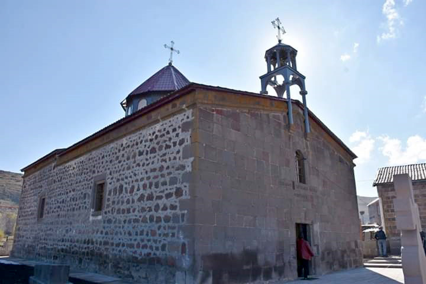
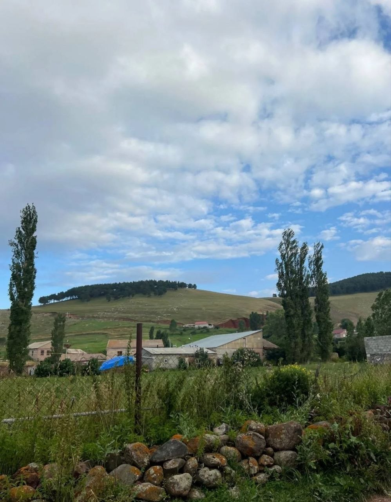
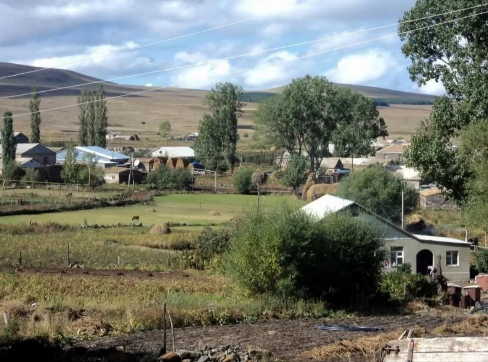
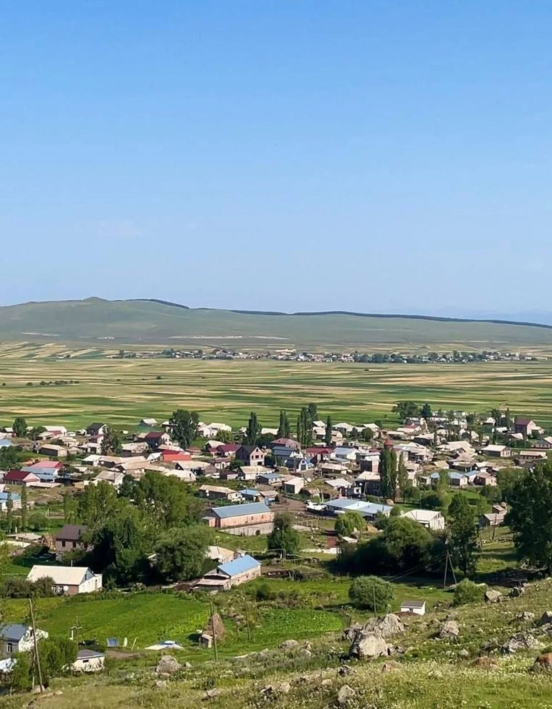
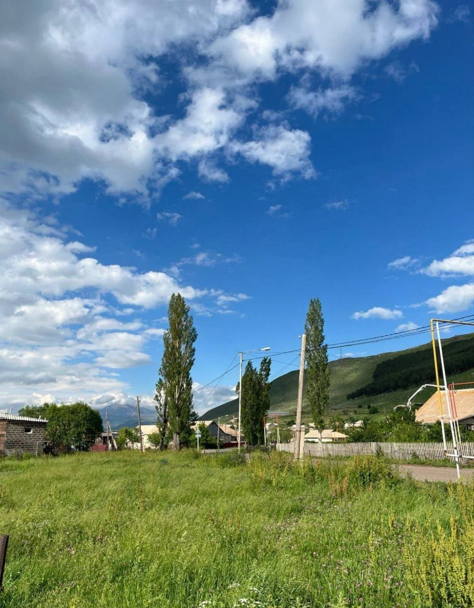
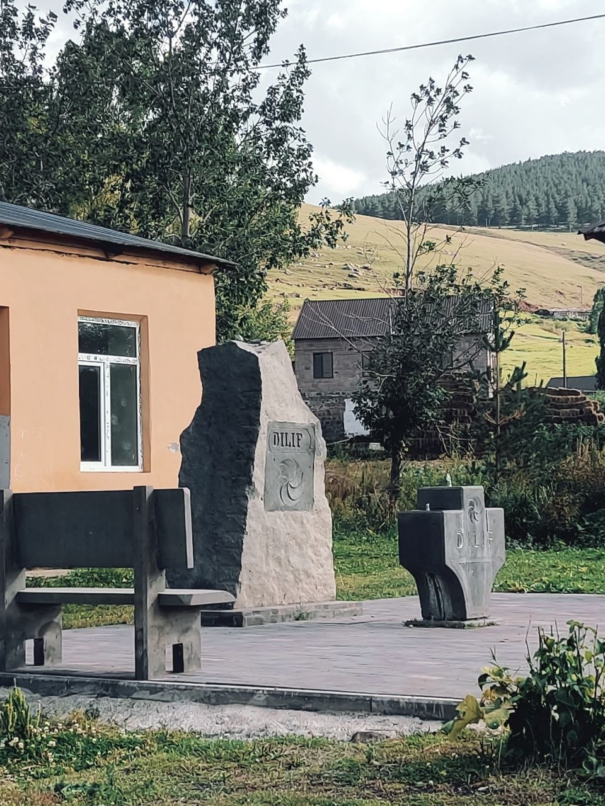
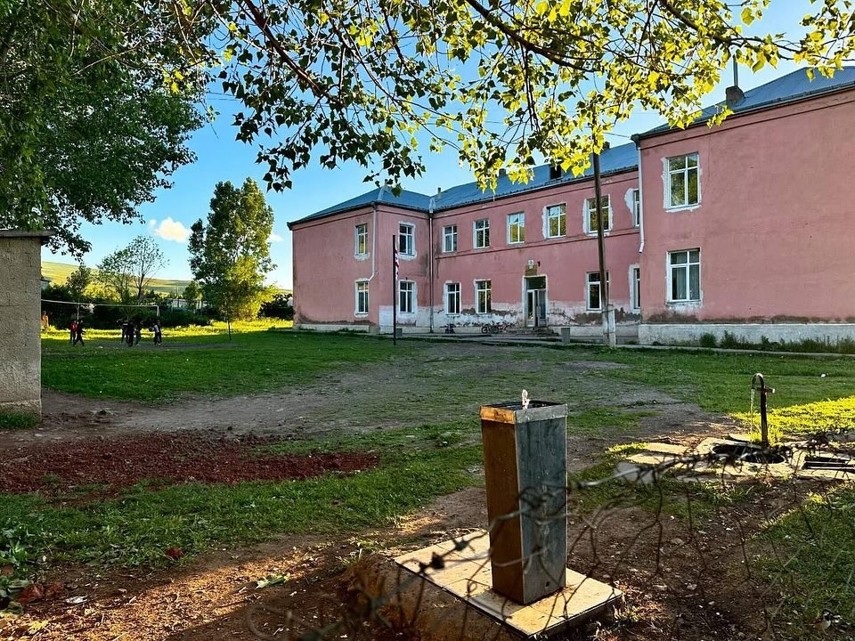

ԴԻԼԻՖ / დილიფი
|
 |
|

|
|
Սամցխե-Ջավախեթի | Նինոծմինդայի շրջան
Դիլիֆը (վրաց.՝ დილიფი) գյուղ է Վրաստանի Սամցխե-Ջավախեթի մարզի Նինոծմինդայի մունիցիպալիտետում։ Այն տեղակայված է Ջավախքի բարձրավանդակում, ծովի մակարդակից բարձր է ավելի քան 1900 մետր։ Գյուղն աչքի է ընկնում իր գեղեցիկ բնությամբ, մաքուր օդով և հյուրընկալ բնակիչներով։
Ամեն տարի Հուլիսի 4-ին Դիլիֆում մեծ շուքով նշվում է Գյուղի Օրը։
Մինչև հաջորդ Գյուղի Օրը մնացել է․
Գյուղն ունի հարուստ պատմություն և մշակութային ժառանգություն։ Բնակչությունը հիմնականում զբաղվում է անասնապահությամբ, հողագործությամբ (կարտոֆիլաբուծությամբ) և մեղվաբուծությամբ։ Դիլիֆում սերնդեսերունդ պահպանվել են Ջավախքի ավանդական տոներն ու սովորույթները։

Դիլիֆ գյուղի Սուրբ Վարդանանց եկեղեցին կառուցվել է 1866 թվականին: Սակայն տարիների ընթացքում քանդվել և վերածվել է պահեստի, որտեղ պահվել է տարբեր տեսակի հացահատիկ:
Եկեղեցու մուտքի պատին փորագրված է. «1866 Սուրբ Վարդանանց Եկեղեցի. գյուղ Դիլիֆ»: 1847-1885 թվականների մատյաններում, մինչև 1870 թվականը, գյուղում գործող եկեղեցին հիշատակվում է Սուրբ Գևորգ անվամբ, որից հետո` Սուրբ Վարդան: 1880-ական թվականներին արդեն Սուրբ Վարդան անվամբ եկեղեցին հիշատակվում է՝ որպես քարաշեն, փայտածածկ կառույց:
Եկեղեցին ունեցել է նաև իր ծխական դպրոցը, որի մասին տեղեկություններ են հաղորդում սկսած 19-րդ դարի 60-ական թվականներից: Համաձայն դրանց` այն բացվել է տեղի հասարակության միջոցներով 1864 թվականին և տվյալ պահին ունեցել է 20 սովորող:
2017 թվականին, նախկին Դիլիֆաբնակ բարերարների նախաձեռնությամբ իրականացվեցին եկեղեցու վերանորոգման աշխատանքները: Վերանորոգվեց եկեղեցու տանիքը, վերականգնվեց գմբեթը և կատարվեցին ներքին հարդարման աշխատանքները:
⛪ 2018 թվականի հոկտեմբերի 12-ին Վիրահայոց թեմի առաջնորդ Գերաշնորհ Տեր Վազգեն եպիսկոպոս Միրզախանյանի ձեռամբ վերաօծվեց Սրբոց Վարդան եկեղեցին: Տեր Տիգրան քահանա ՄԽԻԹԱՐՅԱՆԻ ու Տեր Գևորգ քահանա Ասատրյանի ընկերակցությամբ կատարվեց եկեղեցու դռնբացեքի արարողությունը:




Շրջապատող լեռներն ու ալպիական մարգագետինները, որոնք յուրահատուկ տեսարան են բացում տարվա ցանկացած եղանակին:
🏞️ Բնության յուրահատկությունը․ Ջավախքի բարձրադիր լեռներն ու ալպիական մարգագետիններն ամռանը զով են ու կանաչապատ, իսկ ձմռանը ծածկվում են հաստ ձյան շերտով՝ ստեղծելով հեքիաթային տեսարաններ։
🌾 Տեղական բնությունը․ Գյուղի շրջակայքը հարուստ է մաքուր լեռնային օդով, բուժիչ խոտաբույսերով և բնական վճիտ աղբյուրներով, որոնք կյանք են տալիս տեղի գյուղատնտեսությանն ու անասնապահությանը։

Գյուղի սառնորակ աղբյուրները և տեղի հերոսներին ու պատմությանը նվիրված հուշարձանները:
💧 Սառնորակ աղբյուրներ․ Դիլիֆը հայտնի է իր պաղ ու վճիտ աղբյուրներով, որոնք դարեր ի վեր եղել են գյուղացիների հավաքատեղին ու զովության աղբյուրը ամռան տապին։
🎖️ Հիշատակ ու հարգանք․ Գյուղում կանգնեցված հուշարձանները խորհրդանշում են դիլիֆցիների հերոսական անցյալը, հայրենասիրությունն ու հարգանքը՝ հայրենիքի համար իրենց կյանքը տված նախնիների հիշատակի հանդեպ։

Դպրոցը գյուղի կարևորագույն կրթական և մշակութային կենտրոնն է, որտեղ սովորում են Դիլիֆի երեխաները։
🏆 Հպարտության էջ․ Դպրոցի աշակերտ Սերգեյ Ավետիսյանը (9-րդ դասարան) հաղթել է «Էտալոն» ինտելեկտուալ մրցույթում և ներկայացրել Նինոծմինդայի մունիցիպալիտետը եզրափակիչ փուլում։
Մարզ: Սամցխե-Ջավախեթի (Samtskhe-Javakheti)
Շրջան: Նինոծմինդա (Ninotsminda)
Գյուղ: Դիլիֆ (Dilif / დილიფი)
Էլ․ հասցե: dilif.village@gmail.com
Instagram: @dilif_mtskhetis_raioni
Սոսո Հայրապետյան և Վարդան Ուրումյան - Դիլիֆ 2021
▶ Լսել Երգը YouTube-ումԵթե ունեք գյուղի գեղեցիկ նկարներ, ուղարկեք դրանք մեր Telegram-ին՝ @dilifvillage:
👁️ Այցելություններ․